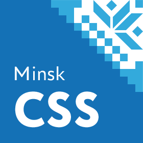
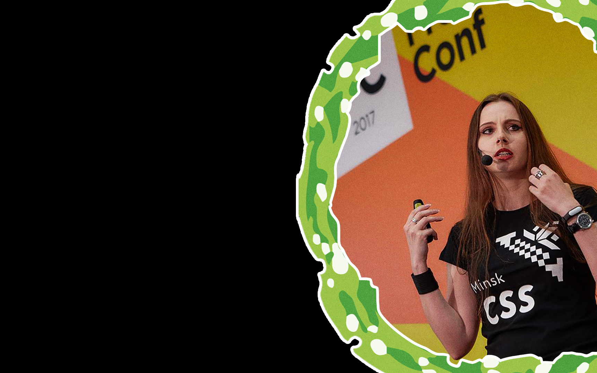

Война текстовых редакторов: рассказ очевидца
Война текстовых редакторов: рассказ очевидца
Александра Шинкевич (
@neesoglasnaja
)
Кто я?
Глава отдела фронтенда, LOVATA
Full-stack MEAN разработчик


Вернемся к динозаврам
История текстовых редакторов
История текстовых редакторов
Текстовые редакторы vs IDE
Что сравниваем
Sublime Text 3
Atom
VS Code
Web Storm
VIM
Как сравниваем: объективно
Дата первого релиза и частота обновлений
Что поддерживает из коробки
Расширяемость и кастомизируемость
Мультиязычность интерфейса
Лицензия
Как сравниваем: субъективно
Простота начала работы
Базовые технологии и/или небольшие проекты
Фреймфорки и "синтаксический сахар"
Работа с большими проектами
Отладка, консоль, git
"Киллер-фичи"
Sublime Text 3
Писать код - не главное в работе программиста
Выводы
Ссылки на тему
Вопросы?
bit.ly/MinskCSS-ETA
Александра Шинкевич (
@neesoglasnaja
)